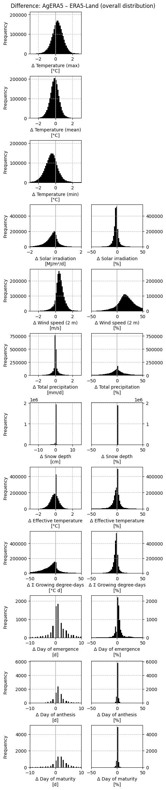
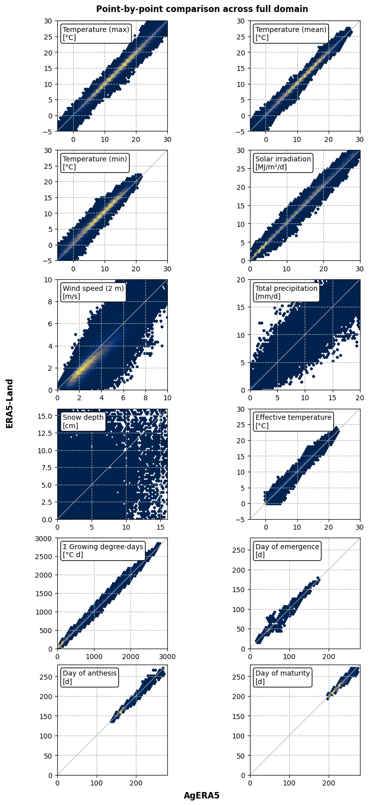
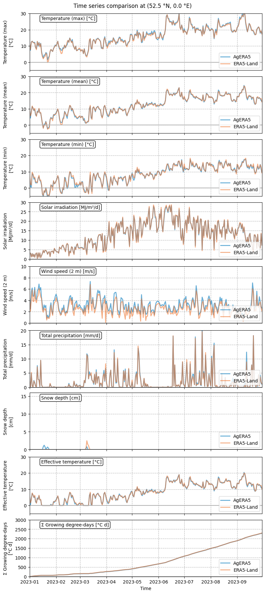
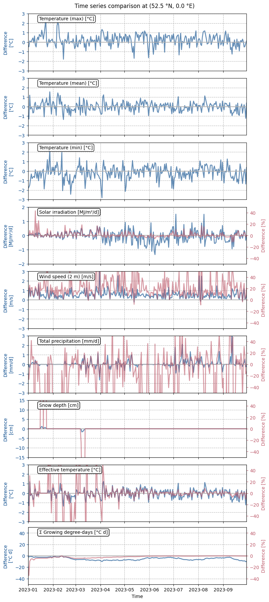
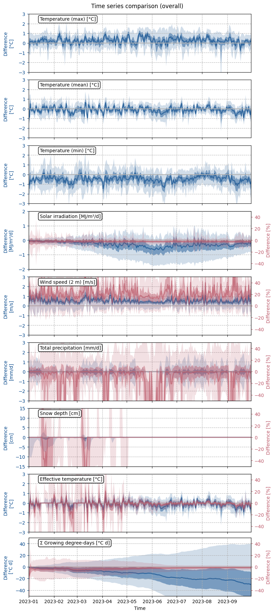
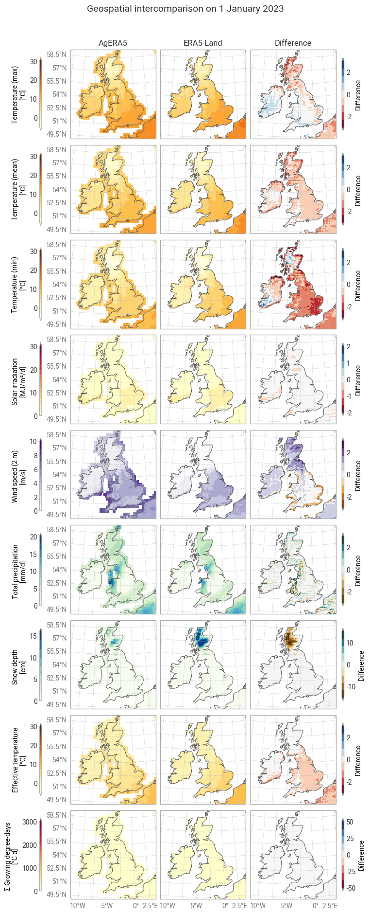
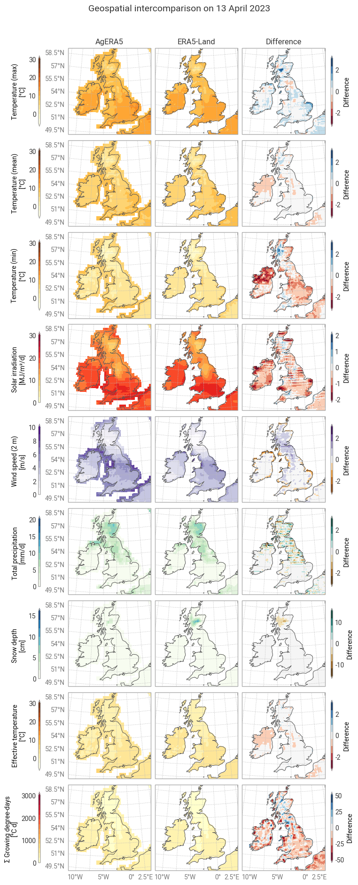
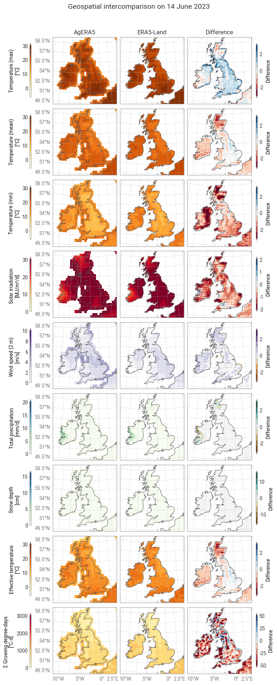
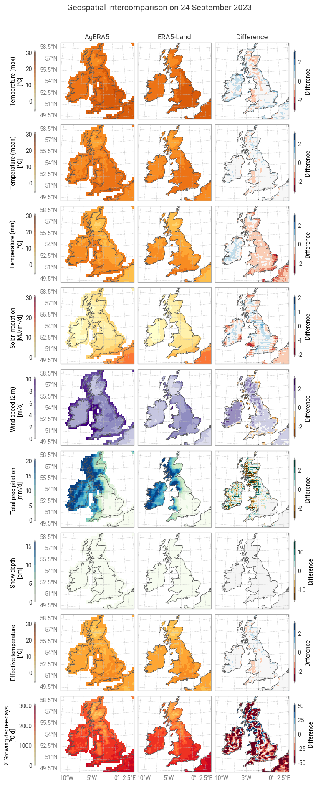
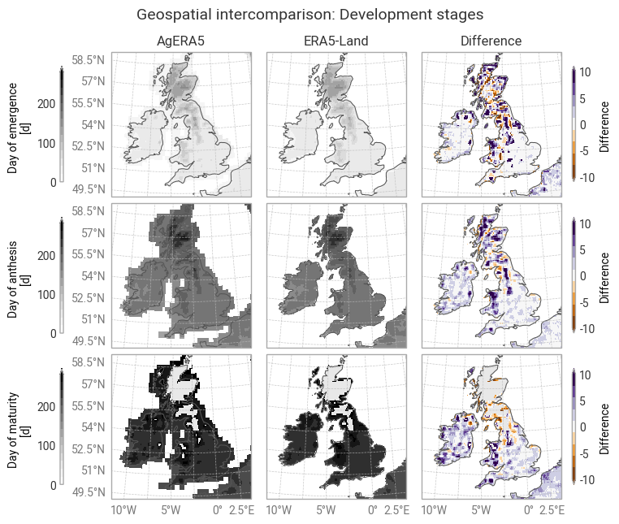

6.1. Agricultural simulations using AgERA5: Regional intercomparison between reanalysis datasets#
Production date: 2026-01-20.
Please note that this repository is used for development and review, so quality assessments should be considered work in progress until they are merged into the main branch.
Dataset version: 2.0.
Produced by: Olivier Burggraaff (National Physical Laboratory).
🌍 Use case: Agricultural yield estimation based on reanalysis data#
❓ Quality assessment question#
Is AgERA5 fit-for-purpose as an input dataset for crop models?
How do the AgERA5 and ERA5-Land datasets differ for agriculturally relevant variables?
Reliable estimation of crop yields using models such as WOrld FOod STudies (WOFOST) [De Wit+19] depends on reliable and fit-for-purpose meteorological data. Crop models simulate growth and yield based on daily weather variables including temperature, solar irradiation, vapour pressure, wind speed, and precipitation (snow/rain). Local simulations may make use of local observational data, such as individual weather stations, but these do not always provide sufficient spatial and temporal coverage and consistency.
Reanalyses like ECMWF Reanalysis v5 (ERA5) [Hersbach+20] provide meteorological data consistently and with gap-filled spatial and temporal coverage by combining historical observations and modelling. Thanks to these advantages, ERA5 and its higher-resolution derivative ERA5-Land [Muñoz-Sabater+21] are now commonly used to drive crop models [Evenflow+24]. However, these datasets were not designed specifically for agriculture and therefore require considerable processing before they can be used in crop models.
The Agrometeorological indicators from 1979 to present derived from reanalysis or AgERA5 dataset fills this gap by providing agriculturally relevant variables in a ready-to-use format.
Compared to ERA5,
AgERA5 is downscaled from 0.25° to 0.1° spatial resolution,
aggregated to daily resolution in local time zones,
and
bias-adjusted.
It is accessible from the CDS directly [AgERA5 dataset]
or through the agera5tools Python package.
AgERA5 has become very popular for crop modelling and climate analysis, among other use cases [De Wit+24].
Here, we assess the fitness-for-purpose of AgERA5 for agricultural studies through an intercomparison with ERA5-Land. The assessment focuses on the ease of use of both datasets for this particular use case as well as the quantitative difference between AgERA5 and ERA5-Land for agriculturally relevant variables. Both datasets are derived from ERA5, with differences in their aggregation and downscaling methods, bias adjustment, and provided variables. Hence, this intercomparison is not an independent validation of either dataset, but rather an intercomparison between similar products. Quality assessments for ERA5 and ERA5-Land can be found in the relevant chapter of this website.
Agricultural intercomparisons are best performed regionally to account for local climate and meteorological conditions as well as local agricultural practices. Accordingly, this notebook is focused on one region in one growth season, but it is written in such a way that it can serve as a template for the user to pick up and apply to their own desired region or time frame.
📢 Quality assessment statement#
These are the key outcomes of this assessment
The AgERA5 dataset (Agrometeorological indicators from 1979 to present derived from reanalysis) is highly fit for the purpose of agricultural simulations because it provides all the relevant variables with the appropriate temporal aggregation on a 0.1° × 0.1° geospatial grid.
Values for all variables differ slightly between AgERA5 and ERA5-Land, despite sharing a common origin, because the datasets are derived differently. However, even accumulated along an entire growth season, these differences are small compared to the relevant uncertainties and real physical variation.
Differences between AgERA5 and ERA5-Land show patterns in space and time. This assessment is set up to be customisable for a different region or period and can serve as a jumping-off point for further analysis.
Neither AgERA5 nor ERA5-Land provides uncertainties on its data.
📋 Methodology#
This quality assessment tests the ease of use of the AgERA5 (Agrometeorological indicators from 1979 to present derived from reanalysis) dataset and its consistency with ERA5-Land (ERA5-Land hourly data from 1950 to present and ERA5-Land post-processed daily statistics from 1950 to present). It focuses on the following variables of interest for a crop model such as PCSE/WOFOST:
Variable name |
Statistic (24h) |
Unit |
Example assessment |
|---|---|---|---|
Solar irradiation |
Total |
MJ/m²/day |
|
Temperature (2 m) |
Mean |
°C |
|
Rain |
Total |
cm/day |
|
Wind speed (2 m) |
Mean |
m/s |
|
Snow depth |
Mean |
cm |
Evapotranspiration is another important variable for agricultural models. AgERA5 provides reference evapotranspiration values derived from the variables described above using the FAO version of the Penman–Monteith equation for a hypothetical reference crop in a vegetated surface [Allen+98]. ERA5-Land also provides (actual and potential) evapotranspiration, but derives these using a different method and therefore the datasets cannot easily be compared one-to-one for this variable. For intercomparisons of evapotranspiration calculated from AgERA5, ERA5-Land, and other datasets, the reader is referred to e.g. [Garbanzo+25, Garcia-Prats+25].
Both AgERA5 and ERA5-Land provide wind speed at 10 m altitude, following ERA5, because this is the standard height for wind measurements in meteorology. The wind speed at 2 m, which crop models typically use for their evapotranspiration calculations, can be estimated as 0.75× the wind speed at 10 m [Allen+98].
An important quantity derived from temperature is the number of growing degree-days (°C d) or thermal time (TSUM in WOFOST). Growing degree-days are essentially the sum of the effective daily temperature Teff over time, with Teff the temperature relative to a base temperature Tbase, below which crop development stops, and capped by a temperature Tcap, above which crop development does not increase [De Wit+20, Ceglar+19]:
The cumulative thermal time or total growing degree-days, TSUM, is the sum of Teff over time:
In many models, growing degree-days control the development stages of a crop,
with thresholds set for emergence, anthesis, and maturity.
Specific values depend on the crop, cultivar, site, model, etc.
As an example,
temperate maize has Tbase of 4 °C and Tcap of 30 °C, and TSUM of 110 °C d for emergence, 695 °C d for emergence–anthesis, and 800 °C d for anthesis–maturity
in the WOFOST crop parameter sets.
These are the values of Tbase, Tcap, and TSUM used in this assessment;
if running the notebook yourself, these values can be customised by editing the growing_degree_days function in the code setup.
A full crop model run is outside the scope of this assessment, but the effective daily temperature and cumulative growing degree-days will be included in the analysis. There are other agriculturally relevant cumulative quantities relating to moisture, irradiation, and nutrient absorption, but these are considerably more complex and therefore also out of scope.
The analysis and results are organised in the following steps, which are detailed in the sections below:
Import all required libraries.
Define helper functions.
Download data from AgERA5.
Download data from ERA5-Land.
Pre-process data.
Point-by-point comparison.
Time series comparison.
Geospatial comparison.
📈 Analysis and results#
1. Code setup#
Note
This notebook uses earthkit for downloading (earthkit-data) and visualising (earthkit-plots) data. Because earthkit is in active development, some functionality may change after this notebook is published. If any part of the code stops functioning, please raise an issue on our GitHub repository so it can be fixed.
Import required libraries#
In this section, we import all the relevant packages needed for running the notebook.
Helper functions#
This section defines some functions and variables used in the following analysis, allowing code cells in later sections to be shorter and ensuring consistency.
Data downloading#
The following functions help with downloading data within the desired spatial/temporal domain:
Data (pre-)processing#
The following cell defines the order in which data variables are shown in tables and figures, for consistency:
The following functions handle updating and propagating metadata:
The following functions handle unit conversions, e.g. K to °C:
The following functions handle harmonisation of coordinates:
Derived variables#
The following functions calculate derived variables such as 2 m wind speed and growing degree-days:
Statistics#
The following functions calculate the difference (absolute / relative) between datasets, handling metadata etc.:
The following functions aid in sub-selecting data, e.g. extracting time series:
Visualisation#
The following cell defines earthkit-plots styles for the variables in the datasets. These styles define the colour maps and colour bar ranges for each quantity.
The following functions are helpers for displaying in Jupyter Notebook or Jupyter Book style, adding textboxes with consistent formatting, adjusting axis limits, etc.:
The following functions are also base helper functions, but specific to geospatial plots:
The following functions perform geospatial comparisons between datasets, including the per-pixel difference:
The following functions perform point-by-point (scatter, histogram) comparisons between datasets:
The following functions perform time series comparisons between datasets:
2. Download data#
General setup#
This notebook uses earthkit-data to download files from the CDS. If you intend to run this notebook multiple times, it is highly recommended that you enable caching to prevent having to download the same files multiple times. If you prefer not to use earthkit, the following requests can also be used with the cdsapi module. In either case (earthkit-data or cdsapi), it is required to set up a CDS account and API key as explained on the CDS website.
We will be downloading multiple datasets in this notebook. CDS data requests take the form of dictionaries in Python. When making multiple requests (e.g. to download data from multiple catalogue entries), it is convenient to set up a template request with some default parameters. In this section, we define our template containing those parameters that are constant between datasets: the domain in time and space. This way, these are guaranteed to be consistent between downloads and only need to be changed in one place if you wish to modify the notebook for your own use case.
In this example, we will be looking at data for the United Kingdom and Ireland every day in January–September 2023. We will also do a time series comparison at one site within this area. The domain, site, and period are defined in the following cell, and can be edited when running this notebook yourself:
The CDS request template is then defined using the values defined above. Additional information to download specific data variables will be mixed into this template in the following sections.
AgERA5#
Due to size limits on the CDS, the different variables of interest in AgERA5 (temperature, irradiation, etc.) have to be downloaded separately and then combined afterwards. This is achieved by combining the previously defined template request with parameters specific to AgERA5, and subsequently with parameters specific to each individual variable.
First, the parameters specific to AgERA5 (dataset ID and version) are defined and combined with the template:
Next, the requests for each of the individual data variables are defined:
The requests for specific variables are combined with the template and passed to earthkit for download from the CDS. Earthkit-data downloads the dataset as a data object. Here, we convert this object to an xarray dataset for ease of use later (when comparing multiple datasets):
<xarray.Dataset> Size: 219MB
Dimensions: (time: 273, lat: 130, lon: 220)
Coordinates:
* lon (lon) float64 2kB -14.9 -14.8 -14.7 ... 6.9 7.0
* lat (lat) float64 1kB 60.9 60.8 60.7 ... 48.1 48.0
* time (time) datetime64[ns] 2kB 2023-01-01 ... 202...
Data variables:
Temperature_Air_2m_Min_24h (time, lat, lon) float32 31MB nan nan ... 281.6
crs (time) int64 2kB 1 1 1 1 1 1 1 ... 1 1 1 1 1 1
Temperature_Air_2m_Max_24h (time, lat, lon) float32 31MB nan nan ... 289.8
Temperature_Air_2m_Mean_24h (time, lat, lon) float32 31MB nan nan ... 285.2
Solar_Radiation_Flux (time, lat, lon) float32 31MB nan ... 1.075e+07
Precipitation_Flux (time, lat, lon) float32 31MB nan nan ... 0.08
Snow_Thickness_Mean_24h (time, lat, lon) float32 31MB nan nan ... 0.0
Wind_Speed_10m_Mean_24h (time, lat, lon) float32 31MB nan nan ... 1.29
Attributes:
Conventions: CF-1.7
title: AgERA5 daily weather variables derived from the ECMWF ERA5 ...
institution: Wageningen Environmental Research
history: Generated by `pragera5 run_daily_processing 2023-01-01` ver...
references: https://doi.org/10.24381/cds.6c68c9bb
source: ECWMF ERA5 reanalysis, https://doi.org/10.24381/cds.143582cfERA5-Land#
The process to download data from ERA5-Land is similar to that for AgERA5 above: defining a template and variable-specific requests. A difference is that data will be downloaded from two CDS datasets. The ERA5-Land hourly data from 1950 to present dataset contains hourly data for variables like 2 m temperature as well as accumulated data for variables like solar irradiation. For the use case in this assessment, we are only interested in the daily accumulated data. ERA5-Land post-processed daily statistics from 1950 to present provides daily minimum/maximum/mean statistics for the hourly variables, saving us the effort of aggregating these ourselves. In the following subsections, the data (accumulated and daily statistics) are downloaded and harmonised to the same format as AgERA5.
Accumulated data from ERA5-Land#
The documentation for ERA5-Land explains:
The accumulations in the short forecasts of ERA5-Land (with hourly steps from 01 to 24) are treated the same as those in ERA-Interim or ERA-Interim/Land, i.e., they are accumulated from the beginning of the forecast to the end of the forecast step. For example, runoff at day=D, step=12 will provide runoff accumulated from day=D, time=0 to day=D, time=12. The maximum accumulation is over 24 hours, i.e., from day=D, time=0 to day=D+1,time=0 (step=24). For the CDS time, or validity time, of 00 UTC, the accumulations are over the 24 hours ending at 00 UTC i.e. the accumulation is during the previous day.
In practice, this means that one needs to download data for day+1 (e.g. 2 January 2023) to get the total accumulated value for day (1 January 2023).
Hence, for this specific dataset, our existing request_time will download data for 2022-12-31 – 2023-09-29, so we need to add one extra day.
This is achieved by adding a second request for just the extra day to the earthkit-data download.
Next, the requests for each of the individual data variables are defined:
The requests for specific variables are combined with the template and passed to earthkit for download from the CDS.
Inspecting the resulting dataset
(in xarray format)
shows that the forecast_reference_time coordinate conveniently matches the variable to the day of accumulation.
It is important to note that this is not true if the data are downloaded in NetCDF format,
in which case there is a 1-day offset;
beware of this difference if modifying this notebook yourself.
<xarray.Dataset> Size: 127MB
Dimensions: (forecast_reference_time: 274, latitude: 131,
longitude: 221)
Coordinates:
* forecast_reference_time (forecast_reference_time) datetime64[ns] 2kB 202...
* latitude (latitude) float64 1kB 61.0 60.9 60.8 ... 48.1 48.0
* longitude (longitude) float64 2kB -15.0 -14.9 ... 6.9 7.0
Data variables:
ssrd (forecast_reference_time, latitude, longitude) float64 63MB ...
tp (forecast_reference_time, latitude, longitude) float64 63MB ...
Attributes:
Conventions: CF-1.8
institution: ECMWFDaily statistics from the post-processed ERA5-Land dataset#
The daily statistics are indexed according to the day they apply to, like AgERA5, meaning we do not need to worry about adding extra days here.
Next, the requests for each of the individual data variables are defined:
The requests for specific variables are combined with the template and passed to earthkit for download from the CDS. Here, we download the different variables separately in anticipation of the harmonisation step in the next subsection.
Pre-processing#
The ERA5-Land dataset is set up differently from AgERA5 and requires some pre-processing before the two can be intercompared. This involves renaming coordinates and variables, and adjusting units.
For the accumulated data, the following steps are necessary:
Rename the variables and coordinates to match those in AgERA5.
Select data within the desired time window only.
Convert the units for precipitation to mm.
For the daily statistics, the steps are as follows:
Rename the temperature variables from just
t2mto maximum, mean, minimum.Calculate 10 m wind speed from its U (east–west) and V (north–south) components.
Rename the snow variable and convert its units to cm.
Combine the pre-processed variables into one dataset.
Rename coordinates to match AgERA5’s.
Lastly, the accumulated data and daily statistics are combined into one xarray object:
<xarray.Dataset> Size: 285MB
Dimensions: (time: 273, lat: 131, lon: 221)
Coordinates:
* time (time) datetime64[ns] 2kB 2023-01-01 ... 202...
* lat (lat) float64 1kB 61.0 60.9 60.8 ... 48.1 48.0
* lon (lon) float64 2kB -15.0 -14.9 -14.8 ... 6.9 7.0
Data variables:
Solar_Radiation_Flux (time, lat, lon) float64 63MB nan ... 1.079e+07
Precipitation_Flux (time, lat, lon) float64 63MB nan ... 0.09382
Temperature_Air_2m_Min_24h (time, lat, lon) float32 32MB nan nan ... 283.2
Temperature_Air_2m_Max_24h (time, lat, lon) float32 32MB nan nan ... 290.1
Temperature_Air_2m_Mean_24h (time, lat, lon) float32 32MB nan nan ... 286.4
Wind_Speed_10m_Mean_24h (time, lat, lon) float32 32MB nan ... 0.6933
Snow_Thickness_Mean_24h (time, lat, lon) float32 32MB nan ... -7.345...
Attributes:
Conventions: CF-1.8
institution: ECMWFHarmonise datasets#
Before the data can be analysed, the two datasets (AgERA5 and ERA5-Land) must be aligned in terms of coordinates and variable names.
Grid alignment#
Both datasets are provided on a regular 0.1° by 0.1° grid, so no regridding is necessary. However, two steps need to be taken before the data can be compared directly:
Their representation as floating-point numbers can cause very small differences to appear, which do not reflect any real differences in the data but are difficult for software (in this case xarray) to work with. Knowing that the data are on a regular 0.1° by 0.1° grid, we can simply round all of the coordinates to 2 digits to force them to be the same.
The bounds of the datasets (in space and in time) are slightly different and need to be aligned.
Units and variable names#
Temperatures are provided in K in both datasets – here, we convert these to °C which is more commonly used in agricultural studies. Solar irradiation is converted from J/m²/d to MJ/m²/d which is more intuitive, with 2.45 MJ/m² approximately equivalent to 1 mm of potential water evaporation [De Wit+20]. The “long” names of variables and units, as stored in xarray metadata, are also harmonised between the two datasets to simplify the analysis steps and figures later on. This is not strictly necessary, but it is convenient when intercomparing two datasets.
Derived variables#
Lastly, the derived variables of 2 m wind speed, effective temperature, and cumulative growing degree-days are calculated and added to both datasets:
AgERA5:
<xarray.Dataset> Size: 281MB
Dimensions: (time: 273, lat: 130, lon: 220)
Coordinates:
* time (time) datetime64[ns] 2kB 2023-01-01 ... 202...
* lat (lat) float64 1kB 60.9 60.8 60.7 ... 48.1 48.0
* lon (lon) float64 2kB -14.9 -14.8 -14.7 ... 6.9 7.0
Data variables: (12/13)
Temperature_Air_2m_Min_24h (time, lat, lon) float32 31MB nan nan ... 8.416
crs (time) int64 2kB 1 1 1 1 1 1 1 ... 1 1 1 1 1 1
Temperature_Air_2m_Max_24h (time, lat, lon) float32 31MB nan nan ... 16.69
Temperature_Air_2m_Mean_24h (time, lat, lon) float32 31MB nan nan ... 12.06
Solar_Radiation_Flux (time, lat, lon) float32 31MB nan nan ... 10.75
Precipitation_Flux (time, lat, lon) float32 31MB nan nan ... 0.08
... ...
Wind_Speed_2m_Mean_24h (time, lat, lon) float32 31MB nan ... 0.9678
Temperature_Effective (time, lat, lon) float32 31MB nan nan ... 8.062
Growing_Degree_Days (time, lat, lon) float32 31MB nan ... 1.841e+03
Day_of_emergence (lat, lon) float32 114kB nan nan ... 117.0
Day_of_anthesis (lat, lon) float32 114kB nan nan ... 188.0
Day_of_maturity (lat, lon) float32 114kB nan nan ... 251.0
Attributes:
Conventions: CF-1.7
title: AgERA5 daily weather variables derived from the ECMWF ERA5 ...
institution: Wageningen Environmental Research
history: Generated by `pragera5 run_daily_processing 2023-01-01` ver...
references: https://doi.org/10.24381/cds.6c68c9bb
source: ECWMF ERA5 reanalysis, https://doi.org/10.24381/cds.143582cf
name: AgERA5ERA5-Land:
<xarray.Dataset> Size: 344MB
Dimensions: (time: 273, lat: 130, lon: 220)
Coordinates:
* time (time) datetime64[ns] 2kB 2023-01-01 ... 202...
* lat (lat) float64 1kB 60.9 60.8 60.7 ... 48.1 48.0
* lon (lon) float64 2kB -14.9 -14.8 -14.7 ... 6.9 7.0
Data variables:
Solar_Radiation_Flux (time, lat, lon) float64 62MB nan nan ... 10.79
Precipitation_Flux (time, lat, lon) float64 62MB nan ... 0.09382
Temperature_Air_2m_Min_24h (time, lat, lon) float32 31MB nan nan ... 10.04
Temperature_Air_2m_Max_24h (time, lat, lon) float32 31MB nan nan ... 16.91
Temperature_Air_2m_Mean_24h (time, lat, lon) float32 31MB nan nan ... 13.27
Snow_Thickness_Mean_24h (time, lat, lon) float32 31MB nan ... -7.345...
Wind_Speed_2m_Mean_24h (time, lat, lon) float32 31MB nan nan ... 0.52
Temperature_Effective (time, lat, lon) float32 31MB nan nan ... 9.271
Growing_Degree_Days (time, lat, lon) float32 31MB nan ... 2.066e+03
Day_of_emergence (lat, lon) float32 114kB nan nan ... 101.0
Day_of_anthesis (lat, lon) float32 114kB nan nan ... 179.0
Day_of_maturity (lat, lon) float32 114kB nan nan ... 236.0
Attributes:
Conventions: CF-1.8
institution: ECMWF
name: ERA5-Land3. Results#
This section contains the comparison between values retrieved from AgERA5 vs ERA5-Land. The datasets are compared in three ways:
Point-by-point: Comparison between individual data points with matching coordinates (in time and space). Provides a quantitative estimate of the agreement between the datasets over the entire domain.
Time series: Agreement between the datasets over time for one site or a range of sites. Relevant for crop yield modelling, which is based on values at specific times and/or aggregated over the entire time series for one site.
Geospatial: Distribution across the spatial domain. Displays spatial patterns and highlights specific areas or types of terrain (e.g. coastal, mountain) with better or worse agreement.
Point-by-point comparison#
In this section, the differences between one-to-one match-ups (same latitude, longitude, and time) between the two datasets are analysed.
We first examine some metrics that describe the difference Δ between corresponding (in time and space) pixels. The 5th and 95th percentiles provide a confidence interval (CI) around the median difference. This is not an uncertainty but rather a description of the variation across the domain.
| 5th Perc. Δ | Median Δ | 95th Perc. Δ | Median |Δ| | Median |Δ| [%] | Pearson r | |
|---|---|---|---|---|---|---|
| Temperature (max) [°C] |
-0.8934 | 0.2396 | 1.3216 | 0.4547 | nan | 0.9944 |
| Temperature (mean) [°C] |
-1.0191 | -0.1060 | 0.7650 | 0.3454 | nan | 0.9958 |
| Temperature (min) [°C] |
-1.7860 | -0.4698 | 0.7708 | 0.5977 | nan | 0.9900 |
| Solar irradiation [MJ/m²/d] |
-1.2525 | -0.2288 | 0.4082 | 0.3040 | 2.8735 | 0.9980 |
| Wind speed (2 m) [m/s] |
-0.3579 | 0.4802 | 1.3507 | 0.5161 | 20.0458 | 0.9111 |
| Total precipitation [mm/d] |
-0.7682 | -0.0013 | 0.7779 | 0.0689 | 12.7456 | 0.9920 |
| Snow depth [cm] |
-0.4395 | 0.0000 | 0.0000 | 0.0000 | 0.0000 | 0.4761 |
| Effective temperature [°C] |
-0.9561 | -0.0317 | 0.6714 | 0.2831 | 3.4757 | 0.9958 |
| Σ Growing degree-days [°C d] |
-53.5529 | -8.1614 | 18.7020 | 11.4221 | 2.9262 | 0.9995 |
| Day of emergence [d] |
-4.0000 | 1.0000 | 12.0000 | 1.0000 | 2.2472 | 0.9867 |
| Day of anthesis [d] |
-2.0000 | 1.0000 | 6.0000 | 1.0000 | 0.6349 | 0.9919 |
| Day of maturity [d] |
-3.0000 | 2.0000 | 6.0000 | 2.0000 | 0.9009 | 0.9857 |
It is immediately clear from the table above that AgERA5 and ERA5-Land generally provide very similar, and highly correlated, values for these agriculturally relevant variables.
AgERA5 has a wider temperature range, with generally but not exclusively warmer maximum (median +0.24 °C; CI –0.89 to +1.32 °C) and colder minimum (median –0.47 °C; CI –1.79 to +0.77 °C) daily temperatures. The difference is larger for minimum temperatures than maximum, which is reflected in the daily mean temperature difference (median –0.11 °C; CI –1.02 to +0.77 °C) and the effective temperature (median –0.03 °C; CI –0.96 to +0.67 °C). These differences are comparable to typical uncertainties in 2 m temperature estimates from ERA5 [Hersbach+20]. Differences in temperature follow a smooth random distribution (Figure 6.1.1) without apparent features at specific values (Figure 6.1.2). Effective temperature has a sharp peak at 0 °C difference corresponding to days where the temperature in both datasets is capped at the base or top.
For crop models, the temperature on individual days is less important than the cumulative number of growing degree-days and the resulting development thresholds (day of emergence, anthesis, maturity). The small tendency towards colder temperatures in AgERA5 compared to ERA5-Land generally results in fewer growing degree-days (median –8.2 °C d; CI –53.6 to +18.7 °C d; Figure 6.1.1), with a spread (median absolute percentage difference) of 2.9%. However, since this is a cumulative variable, the difference may be skewed by the early months when differences have not had time to accumulate yet. The dates at which development thresholds are met are very similar between both datasets, with a spread of 2.2% in day of emergence and <1% in anthesis and maturity. For all three, the slight decrease in growing degree-days results in a slight delay in development in AgERA5 compared to ERA5-Land, but this difference is on the order of ~1 day and therefore negligible compared to the effects of uncertainty in the data, real physical variation across the domain (including between plots within one pixel), and the uncertainty inherent to crop modelling.
As for the non-temperature variables, the difference in solar irradiation (median –0.23 MJ/m²/d; CI –1.25 to +0.41 MJ/m²/d) is small both relative to its values (median |Δ| of 3%) and in practice (equivalent to ~0.1 mm water evaporation per day). The differences in precipitation are also small, <1 mm per day in the vast majority of match-ups, although there are a few outliers (Figure 6.1.2) that increase the median absolute percentage difference. Wind speed appears to have a systematic offset between the two datasets (Figure 6.1.1), although this offset is relatively small (median +0.48 m/s; CI –0.36 m/s to +1.35 m/s) and unlikely to significantly impact crop model runs. Lastly, snow depth is difficult to compare overall because it is 0 in most pixels at most times in this comparison; it will be discussed in more detail in the following sections.

Fig. 6.1.1 Overall distributions of point-by-point differences between AgERA5 and ERA5-Land for each variable. Note that some variables (e.g. snow depth) are highly concentrated at 0 difference.#

Fig. 6.1.2 Point-by-point comparison (density scatter) between AgERA5 and ERA5-Land for each variable. Yellow means high density, blue means low density, white means zero points in that bin.#
Time series comparison#
Crop yield estimates make use of the time series of the relevant variables at a given site. In this section, the differences between match-ups between the two datasets along a time series at one site (same latitude, longitude) are analysed, as well as the statistics of all time series in the entire spatial domain.
We first examine the same metrics for Δ as in the point-by-point comparison, this time looking only at values at one site (one latitude, one longitude; specified at the start of the notebook) along its entire time series.
| 5th Perc. Δ | Median Δ | 95th Perc. Δ | Median |Δ| | Median |Δ| [%] | Pearson r | |
|---|---|---|---|---|---|---|
| Temperature (max) [°C] |
-0.7634 | 0.2174 | 1.1301 | 0.4139 | nan | 0.9954 |
| Temperature (mean) [°C] |
-0.8620 | 0.0204 | 0.8367 | 0.3290 | nan | 0.9962 |
| Temperature (min) [°C] |
-1.5127 | -0.1598 | 0.8646 | 0.4570 | nan | 0.9911 |
| Solar irradiation [MJ/m²/d] |
-0.6963 | -0.0420 | 0.5744 | 0.2173 | 1.9353 | 0.9989 |
| Wind speed (2 m) [m/s] |
0.0681 | 0.4769 | 1.2659 | 0.4769 | 16.0054 | 0.9375 |
| Total precipitation [mm/d] |
-0.3727 | -0.0015 | 0.7335 | 0.0444 | 16.2491 | 0.9934 |
| Snow depth [cm] |
0.0000 | 0.0000 | 0.0000 | 0.0000 | 0.0000 | 0.3361 |
| Effective temperature [°C] |
-0.8017 | 0.0000 | 0.6162 | 0.2772 | 3.2895 | 0.9965 |
| Σ Growing degree-days [°C d] |
-8.4694 | -5.4048 | -1.8679 | 5.4048 | 1.1372 | 1.0000 |
| Day of emergence [d] |
0.0000 | 0.0000 | 0.0000 | 0.0000 | 0.0000 | nan |
| Day of anthesis [d] |
1.0000 | 1.0000 | 1.0000 | 1.0000 | 0.6116 | nan |
| Day of maturity [d] |
0.0000 | 0.0000 | 0.0000 | 0.0000 | 0.0000 | nan |
The example site (52.5 °N, 0 °E; chosen arbitrarily) mirrors the results seen in the overall point-by-point comparison, primarily that differences between AgERA5 and ERA5-Land tend to be small. The aforementioned differences in temperature are visible when comparing the time series graphically (Figure 6.1.3) and appear at individual days, rather than an overall offset. A difference in cumulative growing degree-days builds up over time (Figure 6.1.4), but remains too small to affect the resulting development stages significantly.
The systematic offset in wind speed seen in the point-by-point comparison is also visible in the time series (Figure 6.1.4) with AgERA5 consistently providing estimates that are 0.07–1.27 m/s faster than those in ERA5-Land. This is true across most of the spatial domain (Figure 6.1.5). Comparing the values (Figure 6.1.3) and differences (Figure 6.1.4) for total precipitation indicates that its relatively large median percentage difference is caused by outliers, particularly on days with low precipitation.
Only snow depth and solar irradiation show notable patterns over time. While snow depth is 0 cm across most of the time series – as one would expect at this site in the south of the UK – the datasets differ in when they estimate >0 snow depth (Figure 6.1.3). While negligible here, this difference may be more impactful at other sites where snow is more common; this will be discussed in the next section. Lastly, differences in solar irradiation increase in late spring and summer (May–August) in this domain, but stay small percentage-wise (Figure 6.1.5) and in terms of the equivalent evaporation (<0.2 mm/d).

Fig. 6.1.3 Time series comparison between AgERA5 and ERA5-Land for each variable, at one site.#

Fig. 6.1.4 Time series comparison between AgERA5 and ERA5-Land for each variable, at one site.#

Fig. 6.1.5 Time series comparison between AgERA5 and ERA5-Land for each variable, over all sites in the domain. The thick line indicates the median, the dark shaded area the inter-quartile range (25–75%), the light shaded area the 5–95% range.#
Geospatial comparison#
In this section, the geospatial distribution of differences between the two datasets are analysed. This analysis is performed both in terms of development stage thresholds (day of emergence, anthesis, maturity) and in several single-day snapshots along the time domain. The dates for these snapshots are defined in the cell below and can be customised when running this notebook yourself.
As before, the two datasets match well, with the overall distributions of values for each variable being similar across the domain and differences being small (Figure 6.1.6–6.1.10).
The most striking difference is in the apparent spatial resolution of total precipitation, snow depth, and solar irradiation, with AgERA5 appearing blockier and ERA5-Land smoother (e.g. Ireland in Figure 6.1.9). Since both datasets are derived from ERA5 and downscaled to the same 0.1° × 0.1° grid, this effect is caused by differences in their derivation methods. AgERA5 is downscaled from the native ERA5 grid through a nearest-neighbour interpolation – which preserves the ERA5 grid cell size in the data – followed by an empirical bias adjustment based on ECMWF’s HRES operational model for all variables except precipitation and snow depth [Boogaard+25]. ERA5-Land, in contrast, is generated by integrating ECMWF’s CHTESSEL land surface model with a downscaled version of ERA5 meteorology [Muñoz-Sabater+21]. These methods are fundamentally different and hence produce slightly different results. The spatial structure of differences in these three variables, which looks like noise on a rectangular grid (e.g. total precipitation in Wales in Figure 6.1.6), results from this misalignment between downscaling methods. Another visual difference is that AgERA5 uses a coarser land/sea mask, but this does not impact its usage in any way.
Snow depth shows large differences between the datasets, particularly in the Scottish Highlands (Figure 6.1.6), likely also resulting from the different downscaling methods. For snow depth, ERA5-Land is more likely to represent the `ground truth’ since it integrates a land surface model. In this example domain (UK and Ireland), the difference has little real-life impact because it is concentrated in mountainous areas that are less relevant to crop modelling. However, it may be impactful in parts of the world where snow is more common in agricultural areas. This is why, as noted in the introduction, intercomparisons such as this quality assessment should be conducted over limited domains rather than globally. Lastly, it is important to note that ERA5 itself has known biases in its estimates of snow depth [Muñoz-Sabater+21], which propagate into derived datasets.
The previous sections showed that wind speeds in AgERA5 are generally faster across the domain. The geospatial comparison highlights Ireland and Scotland as having particularly large differences, while ERA5-Land wind speeds tend to be faster than AgERA5’s near coastlines (e.g. Figures 6.1.6 and 6.1.9).
There are no clear spatial patterns in the cumulative growing degree-days nor in the derived development stage thresholds (Figure 6.1.10). The spatial differences seen in other variables will impact actual crop models, but these thresholds provide a first-order estimate of the consistency between AgERA5 and ERA5-Land.

Fig. 6.1.6 Geospatial comparison between AgERA5 and ERA5-Land.#

Fig. 6.1.7 Geospatial comparison between AgERA5 and ERA5-Land.#

Fig. 6.1.8 Geospatial comparison between AgERA5 and ERA5-Land.#

Fig. 6.1.9 Geospatial comparison between AgERA5 and ERA5-Land.#

Fig. 6.1.10 Geospatial comparison between AgERA5 and ERA5-Land. Pixels where the condition is never met (e.g. the cumulative degree-days never reach the threshold for maturity within the provided time range) have been masked.#
4. Conclusions#
In this assessment, the AgERA5 and ERA5-Land datasets were compared to assess their ease of use and consistency between variables relevant to agricultural simulations. The datasets are both derived from ERA5 and thus share many similarities. The two main differences are in the ease of use – or rather, tailoredness to agricultural simulations – and in the specific values provided.
AgERA5 is highly fit for the purpose of agricultural simulations because it provides all the relevant variables with the appropriate temporal aggregation on a 0.1° × 0.1° geospatial grid, ready to be used. ERA5-Land is also suitable, but requires more pre-processing to obtain the required data in the desired format. It should be noted that AgERA5, as provided on the CDS, is not fully optimised for acquisition of time series at a specific site. While the code used in this quality assessment can be copied and adapted at will, users may find it more convenient to use the AgERA5tools package developed by the data provider.
Values for all variables differ slightly between AgERA5 and ERA5-Land, despite sharing a common origin, because the datasets are derived differently. AgERA5 applies nearest-neighbour interpolation and an empirical bias adjustment based on ERA5 and HRES. ERA5-Land combines the CHTESSEL land surface model with downscaled ERA5 meteorology. The datasets also differ in their temporal aggregation method. Combined, this results in differences in the values provided. However, even accumulated along an entire growth season, these differences are small compared to the effects of uncertainty in the underpinning data, real physical variation across the domain (including between plots within one pixel), and the uncertainty inherent to crop modelling.
Because neither dataset provides its own uncertainty estimates, a deeper quantitative comparison between individual values is not possible. Uncertainties could be estimated by propagating the ERA5-EDA ensemble through the respective processing chains, but this is not trivial due to the additional uncertainty introduced within those chains [Muñoz-Sabater+21]. There is a wealth of literature comparing either or both of these datasets to other reanalyses and observations, with some references provided in the introduction and below.
ℹ️ If you want to know more#
Key resources#
The CDS catalogue entries for the data used were:
Agrometeorological indicators from 1979 to present derived from reanalysis (AgERA5): sis-agrometeorological-indicators
ERA5-Land hourly data from 1950 to present: reanalysis-era5-land
ERA5-Land post-processed daily statistics from 1950 to present: derived-era5-land-daily-statistics
Code libraries used:
More about crop yield estimation:
More about reanalysis data:
References#
[AgERA5 dataset] H. Boogaard, J. Schubert, A. de Wit, J. Lazebnik, R. Hutjes, and G. van der Grijn, ‘Agrometeorological indicators from 1979 to present derived from reanalysis’. Copernicus Climate Change Service (C3S) Climate Data Store (CDS), Jan. 30, 2020. doi: 10.24381/cds.6c68c9bb.
[Allen+98] R. G. Allen, L. S. Pereira, D. Raes, and M. Smith, Crop evapotranspiration – Guidelines for computing crop water requirements. in FAO Irrigation and drainage papers, no. 56. Rome, Italy: FAO – Food and Agriculture Organization of the United Nations, 1998. Accessed: Nov. 24, 2025. [Online].
[Araghi+22] A. Araghi, C. J. Martinez, and J. E. Olesen, ‘Evaluation of multiple gridded solar radiation data for crop modeling’, European Journal of Agronomy, vol. 133, p. 126419, Feb. 2022, doi: 10.1016/j.eja.2021.126419.
[Boogaard+25] H. Boogaard, A. de Wit, J. Lazebnik, J. Schubert, and G. van der Grijn, ‘Data Stream 2: AgERA5 historic and near real time forcing data: Algorithm Theoretical Basis (ATBD)’, Copernicus Knowledge Base. Accessed: May 20, 2025. [Online].
[Ceglar+19] A. Ceglar et al., ‘Improving WOFOST model to simulate winter wheat phenology in Europe: Evaluation and effects on yield’, Agricultural Systems, vol. 168, pp. 168–180, Jan. 2019, doi: 10.1016/j.agsy.2018.05.002.
[De Wit+19] A. de Wit et al., ‘25 years of the WOFOST cropping systems model’, Agricultural Systems, vol. 168, pp. 154–167, Oct. 2019, doi: 10.1016/j.agsy.2018.06.018.
[De Wit+20] A. J. W. de Wit, H. L. Boogaard, I. Supit, and M. van den Berg, ‘System description of the WOFOST 7.2 cropping systems model’, Wageningen Environmental Research, May 2020. [Online].
[De Wit+24] A. de Wit, H. Boogaard, S. Hoek, and E. Müller, ‘Climate Services for Agriculture – A user perspective on AgERA5’, presented at the 7th C3S General Assembly, Brussels, Belgium, June 19, 2024.
[Esquivel-Arriaga+24] G. Esquivel-Arriaga et al., ‘Performance Evaluation of Global Precipitation Datasets in Northern Mexico Drylands’, Journal of Applied Meteorology and Climatology, vol. 63, no. 12, pp. 1545–1558, Dec. 2024, doi: 10.1175/JAMC-D-23-0227.1.
[Evenflow+24] Evenflow, ‘The value generated by ERA5’, Copernicus Climate Change Service (C3S), Bonn, Germany, Dec. 2024.
[Garbanzo+25] G. Garbanzo et al., ‘Addressing Weather Data Gaps in Reference Crop Evapotranspiration Estimation: A Case Study in Guinea-Bissau, West Africa’, Hydrology, vol. 12, no. 7, p. 161, June 2025, doi: 10.3390/hydrology12070161.
[Garcia-Prats+25] A. Garcia-Prats et al., ‘High-resolution spatially interpolated FAO Penman-Monteith crop reference evapotranspiration maps of Sicily Island (Italy) and Jucar River system (Spain) using AgERA5 and ERA5-Land reanalysis datasets’, Journal of Hydrology: Regional Studies, vol. 60, p. 102531, Aug. 2025, doi: 10.1016/j.ejrh.2025.102531.
[Hasan Karaman+23] Ç. Hasan Karaman and Z. Akyürek, ‘Evaluation of near-surface air temperature reanalysis datasets and downscaling with machine learning based Random Forest method for complex terrain of Turkey’, Advances in Space Research, vol. 71, no. 12, pp. 5256–5281, June 2023, doi: 10.1016/j.asr.2023.02.006.
[Hersbach+20] H. Hersbach et al., ‘The ERA5 global reanalysis’, Quarterly Journal of the Royal Meteorological Society, vol. 146, no. 730, pp. 1999–2049, May 2020, doi: 10.1002/qj.3803.
[Kruger+24] J. A. Kruger, S. J. Roffe, and A. J. van der Walt, ‘AgERA5 representation of seasonal mean and extreme temperatures in the Northern Cape, South Africa’, South African Journal of Science, vol. 120, no. 3–4, pp. 1–13, Mar. 2024, doi: 10.17159/sajs.2024/16043.
[Muñoz-Sabater+21] J. Muñoz-Sabater et al., ‘ERA5-Land: a state-of-the-art global reanalysis dataset for land applications’, Earth System Science Data, vol. 13, no. 9, pp. 4349–4383, Sept. 2021, doi: 10.5194/essd-13-4349-2021.
[Suraweera+24] B. Suraweera, K. De Silva, L. Gunawardhana, and L. Rajapakse, ‘Evaluation of Satellite Rainfall Estimates for Surface Runoff Modelling in the Maha Oya Basin, Sri Lanka’, in 2024 Moratuwa Engineering Research Conference (MERCon), Aug. 2024, pp. 67–72. doi: 10.1109/MERCon63886.2024.10689062.